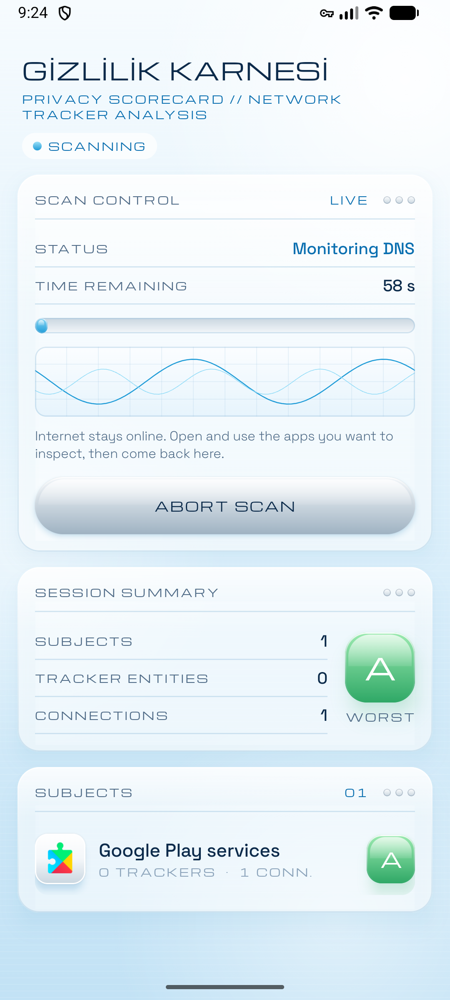
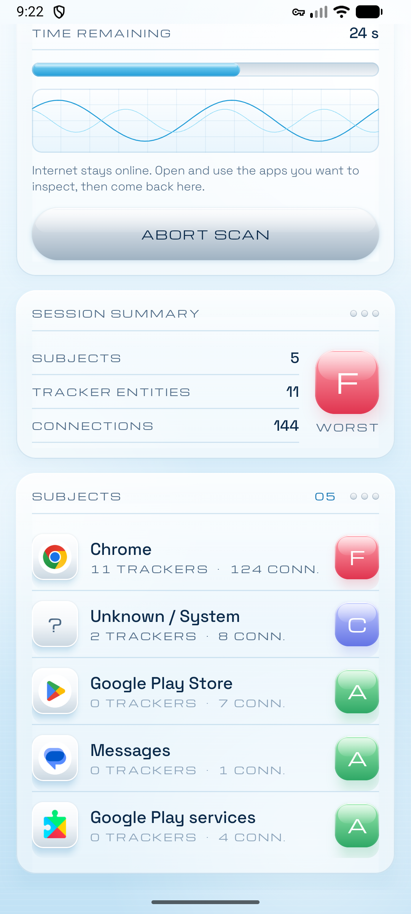
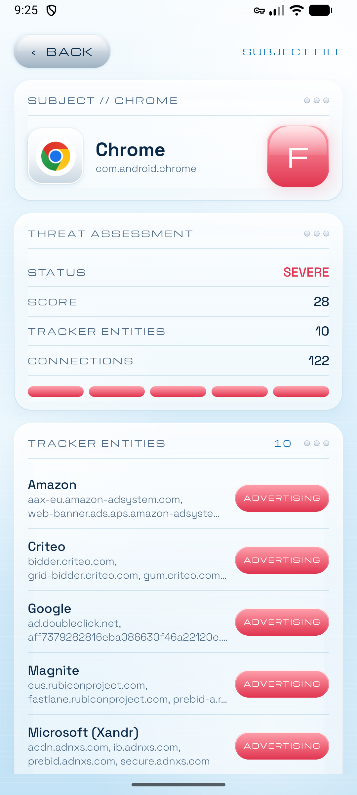

Telefondaki uygulamalar verilerimizi kimlere gönderiyor?
Android uygulaması · Kotlin + Jetpack Compose
Ok tuşları (← →) ile ilerleyin
"Bu el feneri uygulaması 9 reklam şirketine veri gönderiyor."



Tarama sırasında Chrome'da CNN.com açıldı → Chrome F aldı: Google, Amazon, Criteo, Taboola, PubMatic, Magnite, The Trade Desk, Comscore… toplam 10-14 takip şirketi.
Bir uygulama bir sunucuya bağlanmadan önce telefona sorar:
"ads.criteo.com'un adresi ne?"
Bu soruya DNS sorgusu denir; internetin telefon rehberi gibidir.
Biz bu soruları yakalıyoruz. Böylece hangi uygulamanın, hangi şirkete bağlanmak istediğini öğreniyoruz.
Android'in resmi VpnService özelliğini kullanıyoruz. Telefon bizi "VPN" sanıyor, aslında hiçbir yere bağlanmıyoruz.
Sadece DNS soruları bizden geçiyor, diğer tüm trafik normal yolundan gidiyor.
Her şey telefonda işleniyor, hiçbir sunucuya bir şey göndermiyoruz.
10.0.0.53 verdik; soru bizim VPN tünelimize düşergetConnectionOwnerUid() API'si bağlantının sahibini söyler.trackers.json listesi: domain → şirket → kategori (şu an 71 kayıt).| Kategori | Puan |
|---|---|
| Reklam | 3 |
| Parmak izi (cihaz tanıma) | 3 |
| Analitik | 2 |
| Sosyal medya | 2 |
| Hata raporlama | 1 |
Puan şirket başına: Google'ın 5 reklam adresi = 1 şirket = 3 puan. Şirket birden fazla kategorideyse en ağırı sayılır.
| Toplam puan | Not |
|---|---|
| 0 | A · takip yok |
| 1 – 3 | B · az |
| 4 – 6 | C · orta |
| 7 – 10 | D · yoğun |
| 11+ | F · çok yoğun |
Örnek: Google (reklam 3) + AppsFlyer (analitik 2) + Sentry (hata 1) = 6 puan → C
| Aşama | Ne yapıldı |
|---|---|
| Faz 1 · Yakalama | VPN servisi, paket okuma, DNS sorgusundan domain çıkarma, uygulamayı bulma |
| Faz 2 · Analiz | Tracker listesi, domain eşleştirme, A-F not motoru, unit testler |
| Büyük iyileştirme | İlk sürümde tarama sırasında internet kesiliyordu → "sadece DNS" modeline geçildi. CNN'de tespit edilen şirket sayısı 0'dan 14'e çıktı |
| Faz 3 · Ekranlar | Uygulama listesi, not rozetleri, detay ekranı, canlı güncelleme |
| Tasarım | Y2K / Frutiger Aero arayüzü, özel fontlar, uygulama ikonu |
GELISTIRME_GUNLUGU.txt (20 bölüm). Projeye katılmadan önce okunması önerilir.| Dosya | Görevi |
|---|---|
capture/TrafficVpnService.kt | VPN'i kurar, paketleri okur, DNS sorgularını yakalar |
capture/DnsRelay.kt | Sorguları gerçek DNS'e iletir; tekrarları birleştirir, önbellek tutar |
capture/DnsQueryParser.kt, PacketParser.kt | Ham baytlardan IP/UDP başlığı ve domain adını çıkarır |
capture/UidResolver.kt | Bağlantı → uygulama paket adı |
analysis/TrackerDatabase.kt + assets/trackers.json | Tracker listesi ve domain eşleştirme |
analysis/PrivacyGrader.kt | Puan ve A-F not hesaplama |
analysis/ScanResults.kt | Servis ile ekran arasındaki köprü (StateFlow) |
ui/ResultScreens.kt, ui/AeroComponents.kt, MainActivity.kt | Ekranlar ve tasarım bileşenleri |
Medium_Phone).Derle ve emülatöre kur:
gradlew installDebug
Unit testler (10 test):
gradlew testDebugUnitTest
Canlı loglar (Logcat):
adb logcat -s TrafficVpnService
Root'suz tüm uygulamaların trafiğini görmenin tek resmi Android yolu.
Tam NAT yazmadan "nereye bağlanıyor" bilgisini veren en basit sinyal. TLS SNI kodu da hazır ama NAT gerektiriyor.
Tüm trafiği almak interneti kesiyordu; uygulamalar normal davranmıyor, tracker'lar görünmüyordu.
Tek soket + ID eşleştirme + önbellek; dnsmasq'in küçük bir benzeri.
Bir şirketin onlarca alt adresi var. Adres saymak notu yanıltır.
Açıklanabilir ve ayarlanabilir. Ağırlıklar ve eşikler tek yerde duruyor.
trackers.json: domain, şirket, kategori). En çok etki edecek iş.BASLA_BURADAN_OKU.txt: projenin kısa özeti ve güncel durumGELISTIRME_GUNLUGU.txt: her kararın "neden"iSorular?